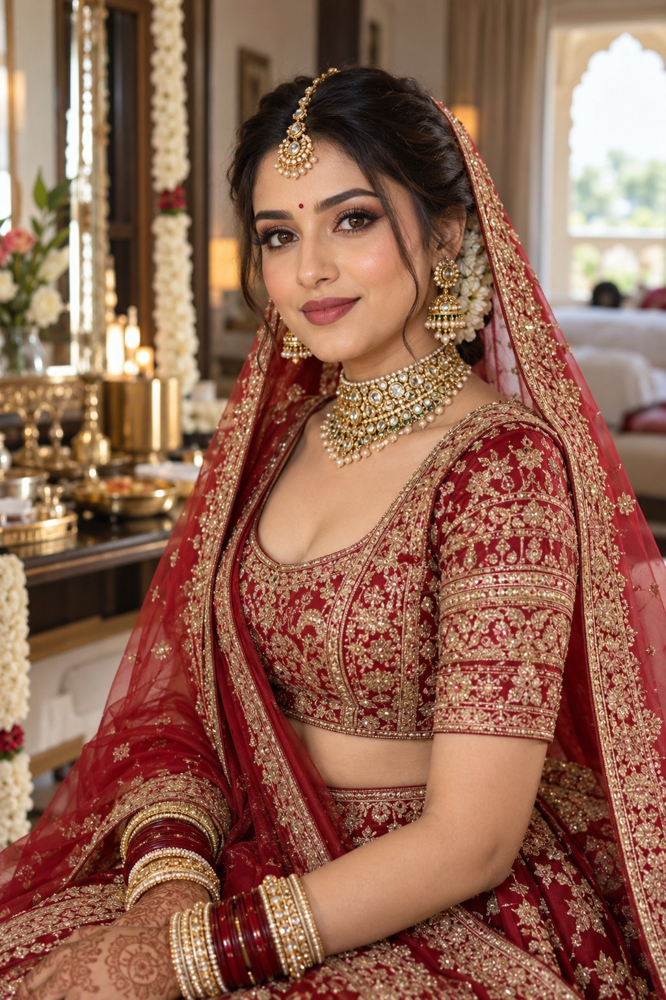
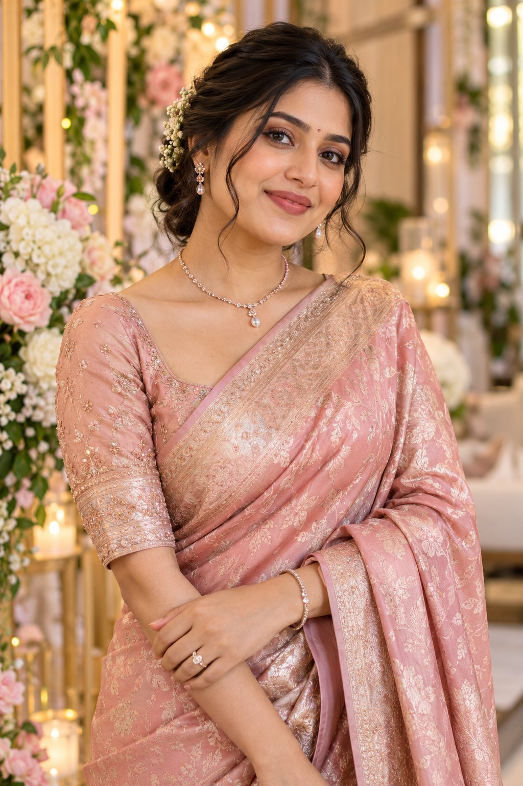
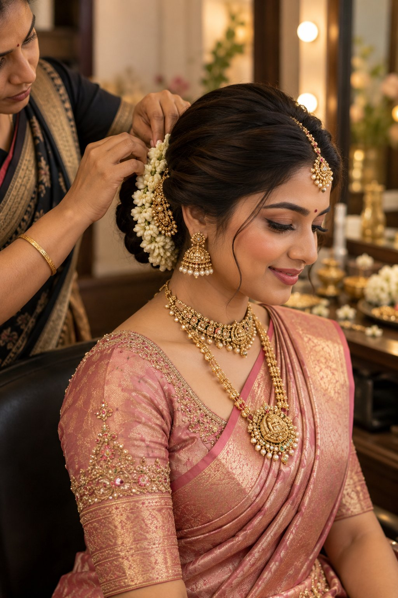
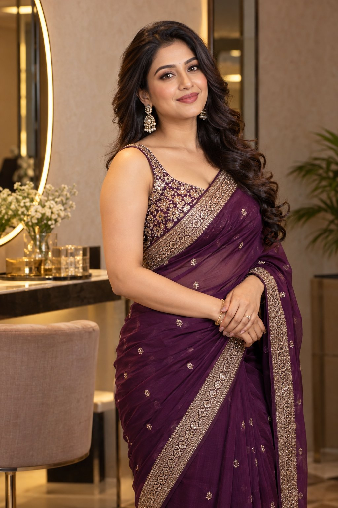
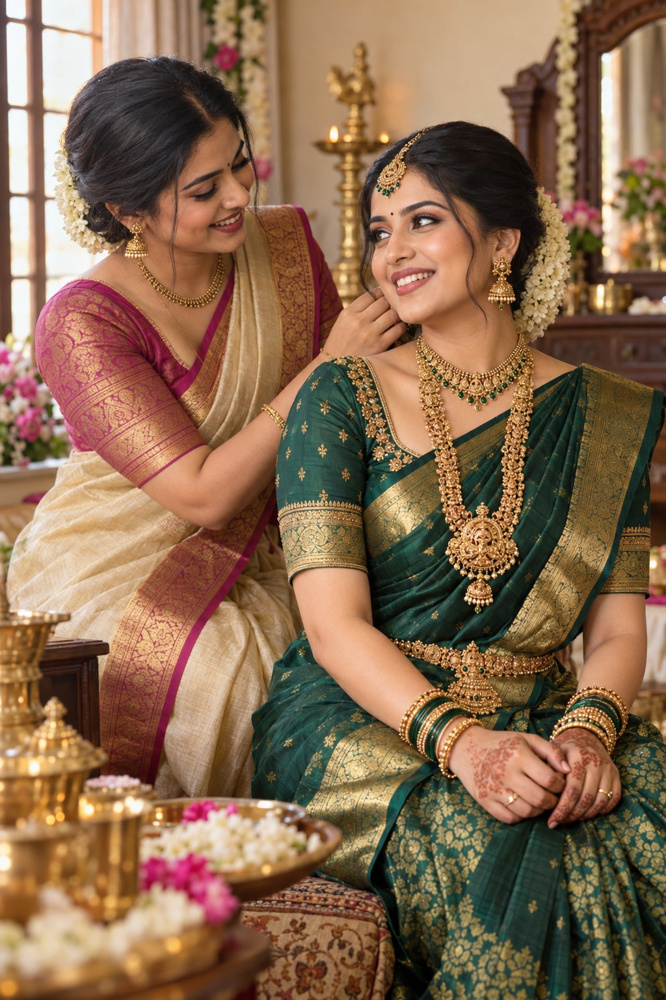
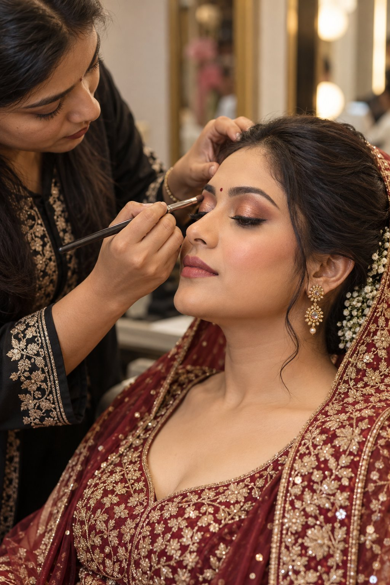

Gallery
Browse bridal, engagement, party makeup, and hairstyling looks from Sanika Makeover.
Gallery
Makeup and styling looks
Browse bridal, engagement, party makeup, and hairstyling looks.

Bridal Glam
Engagement
Hairstyling
Party Makeup
Bridesmaid
Makeup details